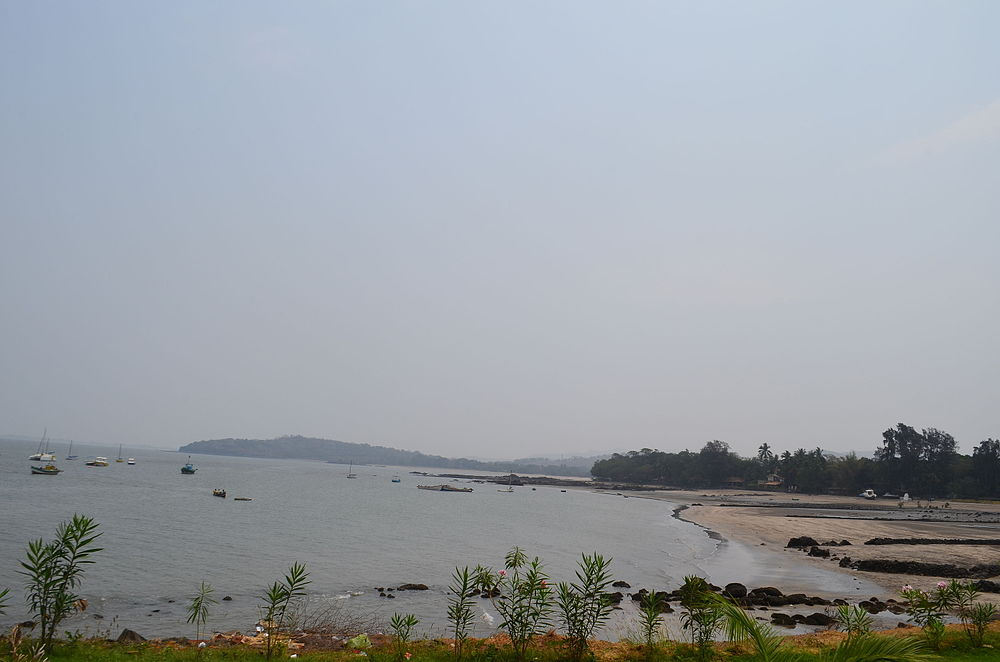

|  |
Varsoli beach is one of the least visited beaches of Alibaug. It isn't visited by many tourists and hence remains less crowded than other beaches of Alibaug. Located just 3 km away from the city, Varsoli beach is known for its beach resorts and cottages that are best suited for a peaceful getaway. The beach serves as a naval base for Indian army and is also known for its variety of adventure sports. Varsoli is a beautiful white-sand beach coupled with the calm waters of the Arabian sea. The coastline of the Varsoli beach is 2 km long laden with the numerous palm, suru and casuarina trees. Few stretches of the shoreline are also dotted with the rocky stone which provides this beach with another natural beauty. The surrounding areas of the beach are filled with the various beach resorts and cottages which are known to offer the best vacation experience to the tourists and travellers. Parnakuti cottage is the most famous and comfortable homestay you would find around the Varsoli beach.